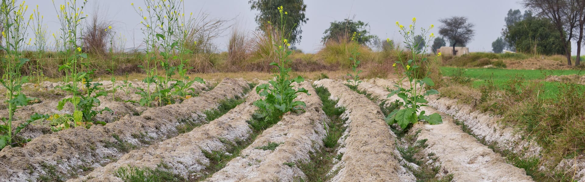

Origin, Classification, and Distribution
Salt-affected soils are found across all continents and in nearly every climate. However, their distribution is more extensive in arid and semi-arid regions compared to humid areas. The nature and characteristics of these soils vary widely, requiring tailored approaches for their reclamation and management to ensure long-term productivity.
Origin of Salts
The presence of excessive salts on the surface and within the root zone defines saline soils. The primary source of all salts in the soil originates from the earth's crust, specifically from primary minerals exposed on the surface.
Classification
Saline Soils
High concentrations of soluble salts (EC > 4 dS/m) with pH < 8.5
Sodic Soils
High sodium content (ESP > 15%) with pH > 8.5

Visual representation of salt-affected soil